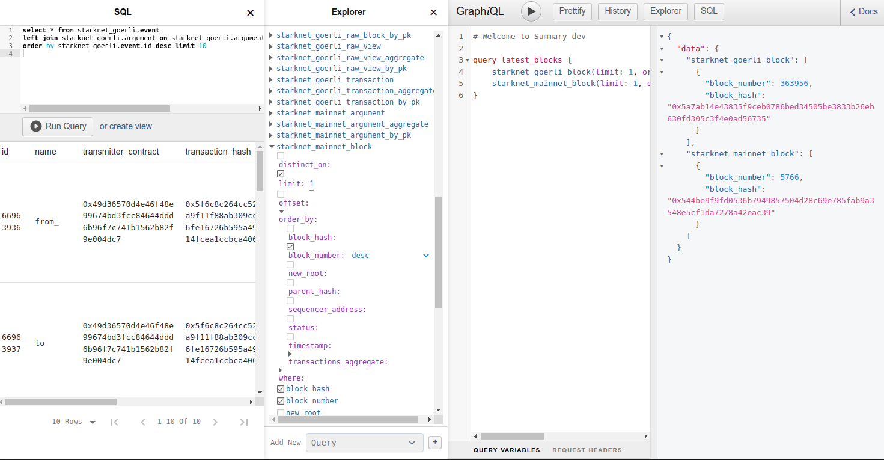

Summary Blockchain Indexer and Web3 Tools
Summary is a suite of tools that let Web3 developers:
- analyze blockchain data
- automate workflows with smart contract events
- create charts and dashboards
- store data for decentralized applications
Summary Blockchain Indexer gathers blockchain data, decodes, persists and makes it available for analysis by GraphQL, SQL and API queries.
We started with StarkNet L2 network and have its data indexed from both the main and test chains. The data is synced up to the latest block available from the network's API.
You can query the data via GraphQL and SQL in our web console.
Quick start
Developer console is open to query blockchain data for events, transactions and their inputs, as well as to filter, aggregate and sum up values.

Try this sample GraphQL in the middle pane editor. It queries for the latest block numbers and their hashes in both StarkNet chains mainnet and goerli.
query latest_blocks {
starknet_goerli_block(limit: 1, order_by: {block_number: desc}) {block_number block_hash}
starknet_mainnet_block(limit: 1, order_by: {block_number: desc}) {block_number block_hash}
}
Now open the SQL console and try this select to query for the last 10 events emitted by StarkNet smart contracts in the test chain goerli.
select * from starknet_goerli.event
left join starknet_goerli.argument on starknet_goerli.argument.event_id = starknet_goerli.event.id
order by starknet_goerli.event.id desc limit 10